Introdução à Ciência de Dados no R
Aula 09 - Visualização de Dados
Aula 09
Antonio Vinícius Barbosa
18-04-2023

Visualização de Dados
Visualização de Dados
“Um simples gráfico trouxe mais informações ao analista de dados do que qualquer outro dispositivo.” (John Tukey, Exploratory Data Analysis, 1977)
Objetivo
Nesta parte do curso, iremos discutir o funcionamento do pacote mais elegante e flexível de visualização gráfica do R , o ggplot2.
- O pacote introduz a “gramática dos gráficos”, um sistema versátil para descrever e construir gráficos.
- Possui lógica semelhante ao
pipe(|>), onde é possível adicionar camadas e informações através de um operador sequencial (+) - Através dele, podemos definir sistematicamente quais são as camadas de um gráfico e como eles se interelacionam.
O pacote ggplot2
O ggplot2 faz parte do toolkit do tidyverse para ciência de dados.
Alguns exemplos

Gramática dos Gráficos
Gramática dos Gráficos
A gramática dos gráficos nos permite descrever concisamente os componentes (ou camadas) de um gráfico.
No
ggplot2, existem 7 camadas principais:
Camadas
-
Data (
data): O conjunto de dados a ser plotado. -
Aesthetics (
aes): A forma na qual mapeamos os dados: cor, tamanho, forma, localização… -
Geometry (
geom): As formas geométricas usadas para visualizar os dados. -
Facets (
facet): Subplots de múltiplas categorias. -
Statistics (
stats): Análise estatística e descrição dos dados. -
Coordinates (
coords): Usado para organizar os objetos geométricos mapeando as coordenadas dos dados. -
Themes (
theme): Aspectos visuais dos gráficos, como plano de fundo, cores e fontes.
Dados IMDb
Para ilustrar os elementos de um gráfico, iremos trabalhar com o banco de dados de filmes disponíveis no IMDb (https://www.imdb.com)
Dados IMDb
# Analisar dados
glimpse(imdb)
## Rows: 85,855
## Columns: 25
## $ imdb_title_id <chr> "tt0000009", "tt0000574", "tt0001892", "tt000210…
## $ title <chr> "Miss Jerry", "The Story of the Kelly Gang", "De…
## $ original_title <chr> "Miss Jerry", "The Story of the Kelly Gang", "De…
## $ year <dbl> 1894, 1906, 1911, 1912, 1911, 1912, 1919, 1913, …
## $ date_published <chr> "1894-10-09", "1906-12-26", "1911-08-19", "1912-…
## $ genre <chr> "Romance", "Biography, Crime, Drama", "Drama", "…
## $ duration <dbl> 45, 70, 53, 100, 68, 60, 85, 120, 120, 55, 121, …
## $ country <chr> "USA", "Australia", "Germany, Denmark", "USA", "…
## $ language <chr> "None", "None", NA, "English", "Italian", "Engli…
## $ director <chr> "Alexander Black", "Charles Tait", "Urban Gad", …
## $ writer <chr> "Alexander Black", "Charles Tait", "Urban Gad, G…
## $ production_company <chr> "Alexander Black Photoplays", "J. and N. Tait", …
## $ actor_1 <chr> "Blanche Bayliss", "Elizabeth Tait", "Asta Niels…
## $ actor_2 <chr> "William Courtenay", "John Tait", "Valdemar Psil…
## $ actor_3 <chr> "Chauncey Depew", "Norman Campbell", "Gunnar Hel…
## $ description <chr> "The adventures of a female reporter in the 1890…
## $ avg_vote <dbl> 5.9, 6.1, 5.8, 5.2, 7.0, 5.7, 6.8, 6.2, 6.7, 5.5…
## $ votes <dbl> 154, 589, 188, 446, 2237, 484, 753, 273, 198, 22…
## $ currency <chr> NA, "$", NA, "$", NA, NA, NA, "ITL", "ROL", "$",…
## $ budget <dbl> NA, 2250, NA, 45000, NA, NA, NA, 45000, 400000, …
## $ usa_gross_income <dbl> NA, NA, NA, NA, NA, NA, NA, NA, NA, NA, NA, NA, …
## $ worlwide_gross_income <dbl> NA, NA, NA, NA, NA, NA, NA, NA, NA, NA, NA, NA, …
## $ metascore <dbl> NA, NA, NA, NA, NA, NA, NA, NA, NA, NA, NA, NA, …
## $ reviews_from_users <dbl> 1, 7, 5, 25, 31, 13, 12, 7, 4, 8, 9, 9, 16, 8, N…
## $ reviews_from_critics <dbl> 2, 7, 2, 3, 14, 5, 9, 5, 1, 1, 9, 28, 7, 23, 4, …A camada Data
A camada Data especifica o conjunto de dados a ser plotado.

A camada Data

Como resultado, temos apenas um quadro em branco (cinza, na verdade!). Precisamos adicionar mais camadas ao gráfico.
A camada Aesthetic
A camada Aesthetic, ou simplesmente aes, adiciona os eixos (variáveis) e seus elementos visuais.

A camada Aesthetic
Para adicionar este elemento ao nosso plot, fazemos:
A camada Aesthetic
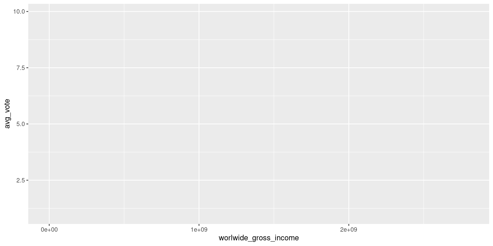Como resultado, saimos de um quadro em branco para a representação das variáveis nos eixos x e y. Precisamos informar o tipo (geometria) de gráfico!
A camada Geometries
A camada Geometries é utilizada para o mapeamento das informações e define a forma como os dados serão apresentados.

A camada Geometries
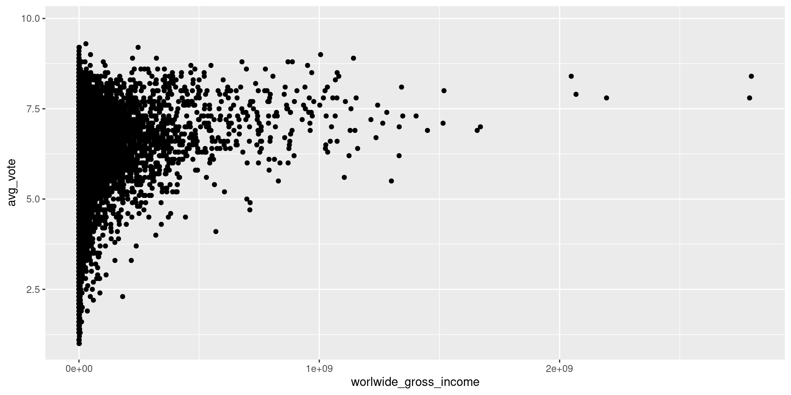Sintaxe básica
De forma geral, existem quatro partes fundamentais para a visualização no ggplot2:

A função ggplot(), a camada data, os parâmetros aes() e a camada de geometria, especificada por geom_xxx()
A camada Geometries
Suponha que queiramos analisar a relação entre o orçamento do filme com a arrecadação de bilheteria.
Neste caso, filter(currency == "$") filtra apenas os filmes com orçamento e receita medidas em dólares.
A camada Geometries

A camada Geometries
É possível alterar alguns elementos da geometria geom_point(), tais como cor, transparência, formato, tamanho,…
A camada Geometries

A camada Geometries
Outra possibilidade é ajustar o tamanho dos pontos de acordo com alguma característica observável. Suponha que desejamos relacionar cada filme com a sua nota no IMDb.
O argumento alpha define a transparência do elemento, variando entre 0 (totalmente transparente) e 1 (totalmente opaco).
A camada Geometries
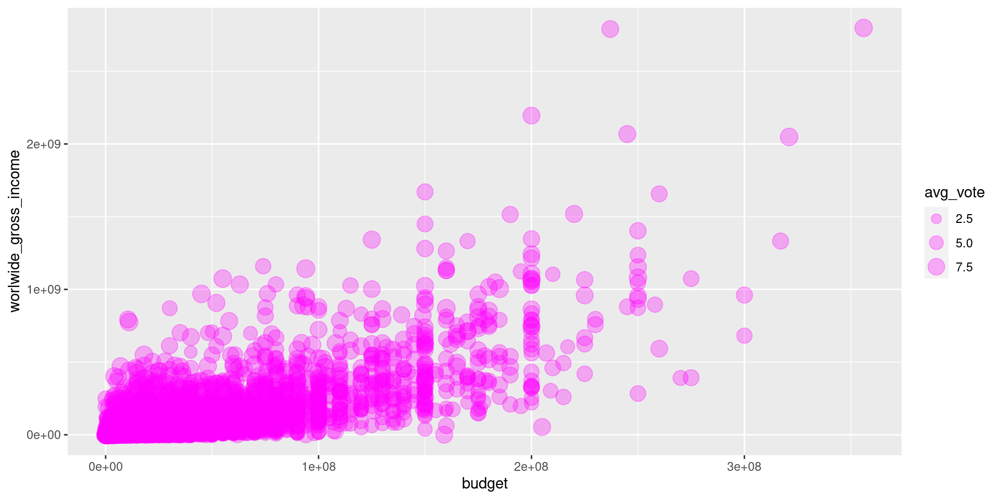A camada Geometries
Estamos interessados em separar os filmes que geraram lucro dos que geraram prejuízo. Podemos adicionar uma reta separando o plano através de geom_abline():
Pontos acima da reta indicam filmes cuja receita foi maior que o seu orçamento, enquanto pontos abaixo indicam aqueles com receita inferior ao orçamento.
A camada Geometries
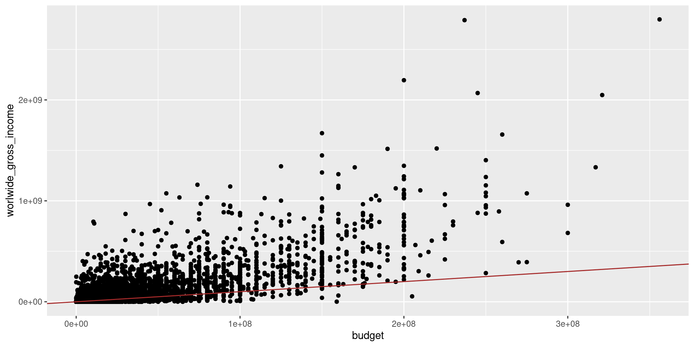A camada Geometries
Podemos melhorar a visualização categorizando os filmes por cores. Para isto, devemos criar uma variável indicativa de lucro.
Observem que podemos utilizar os comandos do ggplot2 sequencialmente aos do dplyr.
A camada Geometries
A camada Geometries
Para adicionar uma camada especificando o nomes dos atributos, utilizamos .
# Plot
imdb |>
filter(
currency == "$"
) |>
mutate(
lucro = worlwide_gross_income - budget,
lucro_ind = if_else(lucro > 0, "Lucro", "Prejuízo")
) |>
filter(
!is.na(lucro)
)|>
ggplot() +
geom_point(aes(x = budget, y = worlwide_gross_income,
color = lucro_ind)) +
labs(x = "Orçamento", y = "Bilheteria", color = "Lucro")A camada Geometries
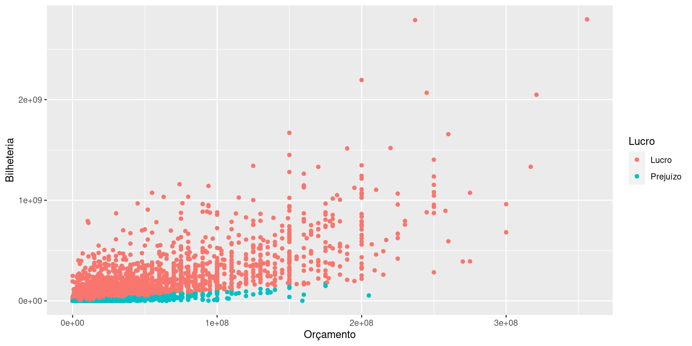A camada Geometries
Para mudar a escala das variável nos eixos, podemos fazer:
# Plot
imdb |>
filter(
currency == "$"
) |>
mutate(
lucro = worlwide_gross_income - budget,
lucro_ind = if_else(lucro > 0, "Lucro", "Prejuízo"),
worlwide_gross_income = worlwide_gross_income/1e+06,
budget = budget/1e+06
) |>
filter(
!is.na(lucro)
)|>
ggplot() +
geom_point(aes(x = budget, y = worlwide_gross_income,
color = lucro_ind)) +
labs(x = "Orçamento (em milhões de US$)",
y = "Bilheteria (em milhões de US$)",
color = "Lucro")A camada Geometries
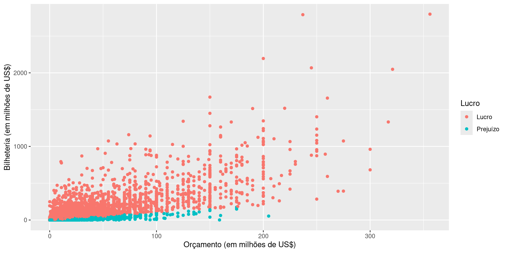As diferentes geometrias
Outras geometrias bastante utilizadas são:
-
geom_line()- para linhas definidas por pares (x,y). -
geom_abline()- retas definidas por intercepto e inclinação. -
geom_hline(),geom_vline()- para retas horizontais/verticais -
geom_bar(),geom_col()- para gráfico de barras ou colunas -
geom_histogram()- para plotar histogramas -
geom_boxplot()- para boxplots -
geom_density()- para plotar a densidade de uma variável -
geom_areas()- para a plotagem de áreas -
geom_bin2d()- para heatmaps
Mais opções: https://ggplot2.tidyverse.org/reference/
A camada Geometries
Para gerar um gráfico de linhas, utilizamos o geom_line()
# Grafico de linhas
imdb |>
filter(
actor_1 == "Clint Eastwood"
) |>
group_by(year) |>
summarise(
media_imdb = mean(avg_vote)
) |>
ggplot() +
geom_line(aes(x = year, y = media_imdb), color = "purple") +
geom_point(aes(x = year, y = media_imdb), color = "purple") +
labs(title = "Notas IMDb: filmes com Clint Eastwood")A camada Geometries
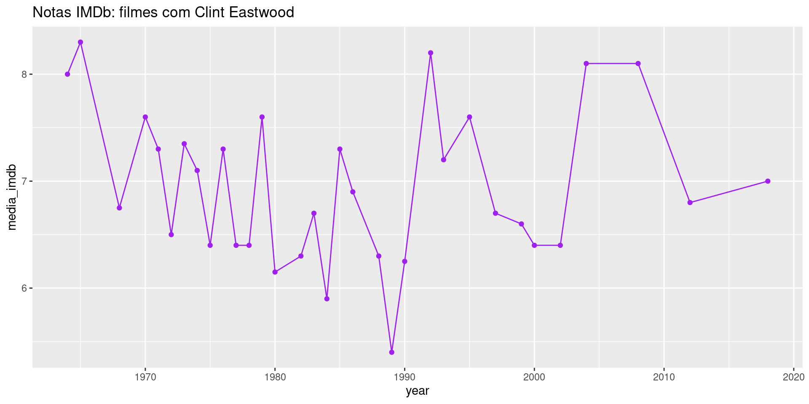A camada Geometries
Para gerar histogramas, utilizamos o geom_histogram()
O histograma requer apenas o mapeamento da variável x para o cálculo da frequência de cada classe.
A camada Geometries
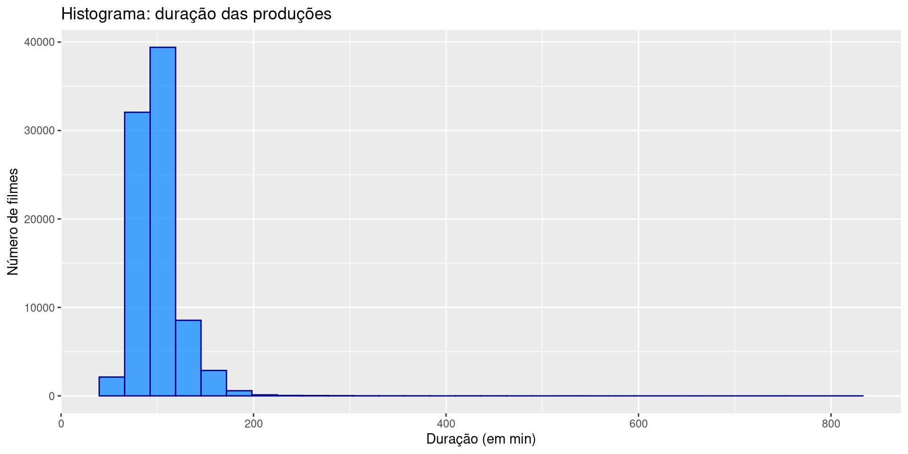A camada Geometries
Adicionando um reta vertical através de geom_vline() no valor da média:
# Histograma
imdb |>
ggplot() +
geom_histogram(aes(x = duration), color = "blue4",
fill = "dodgerblue", alpha = .8) +
geom_vline(xintercept = mean(imdb$duration, na.rm = TRUE),
color = "orange", lwd = 1, linetype = "dashed") +
labs(x = "Duração (em min)", y = "Número de filmes",
title = "Histograma: duração das produções") A camada Geometries
A camada Geometries
Para densidades, utilizamos o geom_density()
Neste caso, filtramos apenas para filmes com duração até 300min.
A camada Geometries
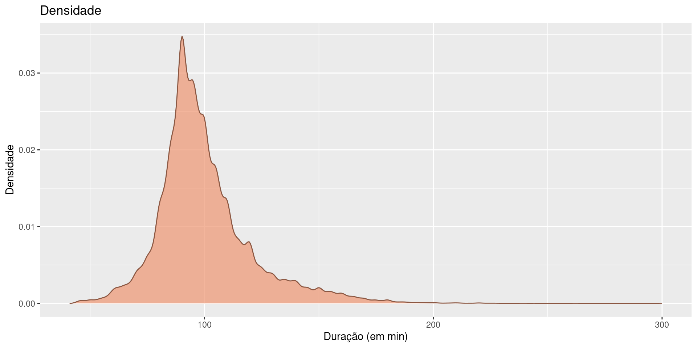Boxplots
Boxplots são plotados com geom_boxplot()
# Boxplot
imdb |>
filter(
director %in% c("Martin Scorsese", "Quentin Tarantino",
"Francis Ford Coppola", "Steven Spielberg")
) |>
ggplot() +
geom_boxplot(aes(x = director, y = worlwide_gross_income,
fill = director), show.legend = FALSE) +
scale_y_continuous(labels = scales::dollar) +
labs(x = "Diretor", y = "Receita",
title = "Boxplot: receita por diretor")Boxplots
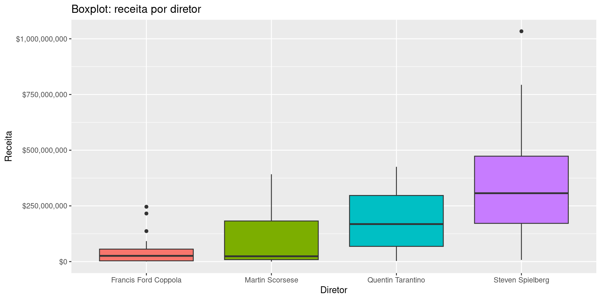Gráfico de barras
Gráficos de barras são plotados com geom_bar()
Gráfico de barras
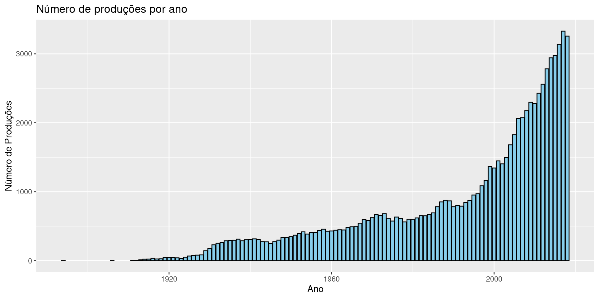Gráfico de barras
Podemos criar gráfico de barras agrupados.
# Grafico de barras
imdb |>
mutate(
genero = stringr::str_split(
genre,
pattern = ",",
simplify = TRUE)[,1]
) |>
filter(
genero %in% c("Comedy", "Action", "Romance",
"Drama", "Adventure", "Biography"),
between(year, 2015, 2019)
) |>
ggplot() +
geom_bar(aes(x = year, fill = genero)) +
labs(x = "Ano", y = "Número de Produções",
title = "Número de produções por ano")Gráfico de barras
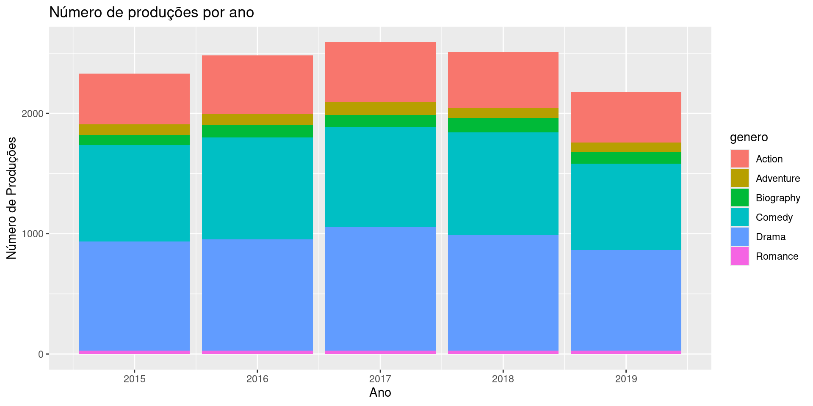Gráfico de barras
Alternativamente
# Grafico de barras
imdb |>
mutate(
genero = stringr::str_split(
genre,
pattern = ",",
simplify = TRUE)[,1]
) |>
filter(
genero %in% c("Comedy", "Action", "Romance",
"Drama", "Adventure", "Biography"),
between(year, 2015, 2019)
) |>
ggplot() +
geom_bar(aes(x = year, fill = genero), position = "dodge") +
labs(x = "Ano", y = "Número de Produções",
title = "Número de produções por ano")Gráfico de barras
Alternativamente
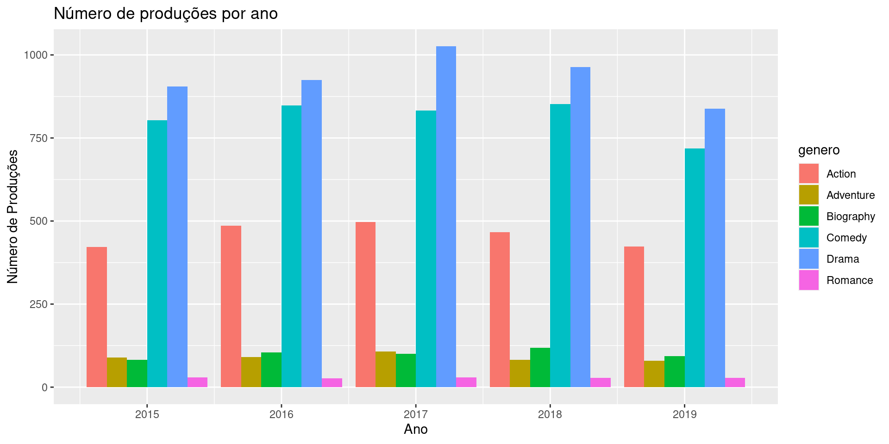Gráfico de barras
Caso já tenhamos calculado a soma, utilizamos geom_col()
# Grafico de barras
imdb |>
filter(
!is.na(director)
) |>
group_by(director) |>
summarise(n_filmes = n()) |>
arrange(desc(n_filmes)) |>
slice(1:5) |>
ggplot() +
geom_col(aes(x = director, y = n_filmes,
color = director, fill = director),
show.legend = FALSE) +
labs(x = "", y = "Número de filmes",
title = "Produções por diretor") Gráfico de barras
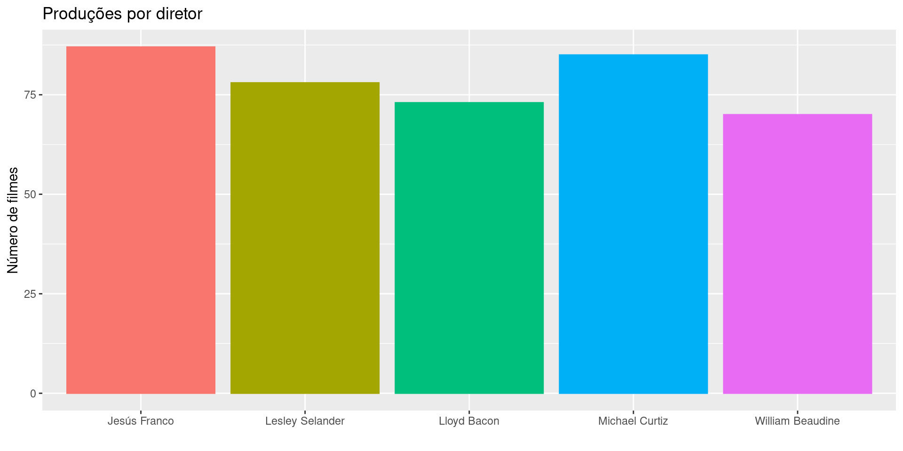Perceba que os diretores foram apresentados em ordem alfabética. Para colocar em ordem crescente, fazemos:
Gráfico de barras
Colocando as barras em ordem crescente:
# Grafico de barras
imdb |>
filter(
!is.na(director)
) |>
group_by(director) |>
summarise(n_filmes = n()) |>
arrange(desc(n_filmes)) |>
slice(1:5) |>
ggplot() +
geom_col(aes(x = reorder(director, n_filmes), y = n_filmes,
color = director, fill = director),
show.legend = FALSE) +
labs(x = "", y = "Número de filmes",
title = "Produções por diretor") Gráfico de barras
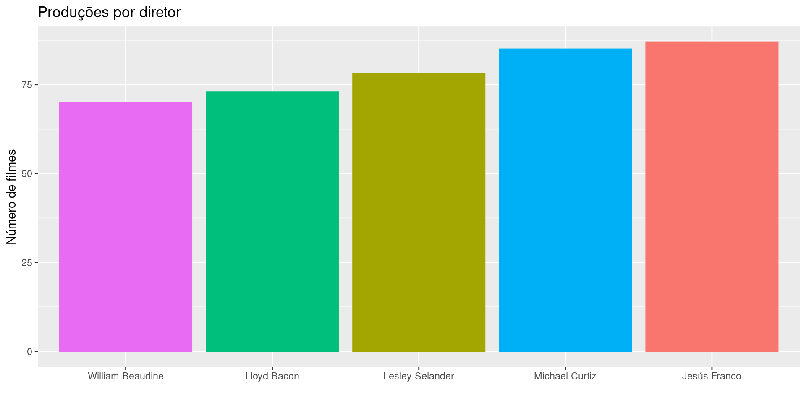A camada Facets
Outra funcionalidade bastante útil é a possibilidade de usar facets para replicar um gráfico para cada categorias de uma variável.

Para exemplificar esta camada, vamos criar uma variável com o primeiro gênero de cada filme, conforme código a seguir.
A camada Facets
# Criar variavel de genero
imdb |>
mutate(
genero = stringr::str_split(
genre,
pattern = ",",
simplify = TRUE)[,1]
) |>
filter(
genero %in% c("Comedy", "Action", "Romance",
"Drama", "Adventure", "Biography"),
duration < 300
) |>
ggplot() +
geom_density(aes(x = duration, color = genero,
fill = genero), show.legend = FALSE) +
facet_wrap(~genero, nrow = 2, ncol = 3)A camada Facets
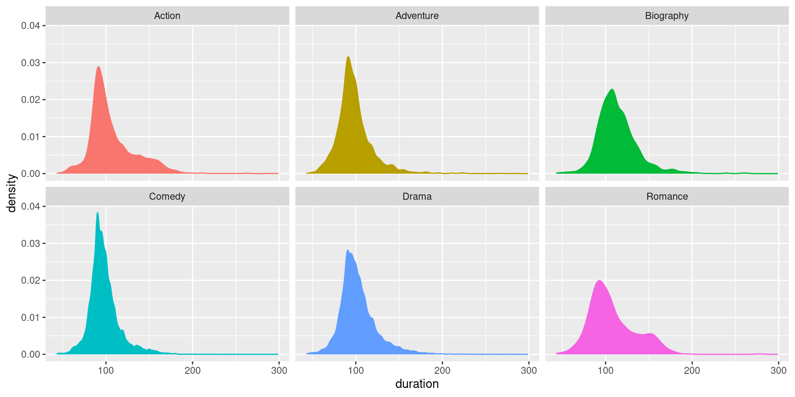A camada Statistics
A camada Statistics permite plotar estatísticas calculadas a partir dos dados.

A camada Statistics
Nos exemplos a seguir, utilizaremos novamente os dados do PNUD sobre os municípios brasileiros nos últimos três Censos.
# Abrir dados
pnud_mun <- readr::read_csv("Dados/pnud_mun.csv")
# Explorar dados
glimpse(pnud_mun)
## Rows: 16,686
## Columns: 14
## $ ano <dbl> 1991, 1991, 1991, 1991, 1991, 1991, 1991, 1991, 1991, 1991, 19…
## $ muni <chr> "ALTA FLORESTA D'OESTE", "ARIQUEMES", "CABIXI", "CACOAL", "CER…
## $ uf <chr> "RO", "RO", "RO", "RO", "RO", "RO", "RO", "RO", "RO", "RO", "R…
## $ regiao <chr> "Norte", "Norte", "Norte", "Norte", "Norte", "Norte", "Norte",…
## $ idhm <dbl> 0.329, 0.432, 0.309, 0.407, 0.386, 0.376, 0.203, 0.425, 0.388,…
## $ idhm_e <dbl> 0.112, 0.199, 0.108, 0.171, 0.167, 0.151, 0.039, 0.220, 0.159,…
## $ idhm_l <dbl> 0.617, 0.684, 0.636, 0.667, 0.629, 0.658, 0.572, 0.629, 0.653,…
## $ idhm_r <dbl> 0.516, 0.593, 0.430, 0.593, 0.547, 0.536, 0.373, 0.553, 0.561,…
## $ espvida <dbl> 62.01, 66.02, 63.16, 65.03, 62.73, 64.46, 59.32, 62.76, 64.18,…
## $ rdpc <dbl> 198.46, 319.47, 116.38, 320.24, 240.10, 224.82, 81.38, 250.08,…
## $ gini <dbl> 0.63, 0.57, 0.70, 0.66, 0.60, 0.62, 0.59, 0.65, 0.63, 0.60, 0.…
## $ pop <dbl> 22835, 55018, 5846, 66534, 19030, 25070, 10737, 6902, 22505, 3…
## $ lat <dbl> -11.929, -9.913, -13.492, -11.438, -13.189, -13.117, -12.962, …
## $ lon <dbl> -61.996, -63.041, -60.545, -61.448, -60.812, -60.542, -60.887,…A camada Statistics
Primeiro, podemos plotar a relação linear entre a renda per capita e o IDHM:
A camada Statistics
Primeiro, podemos plotar a relação linear entre a renda per capita e o IDHM:
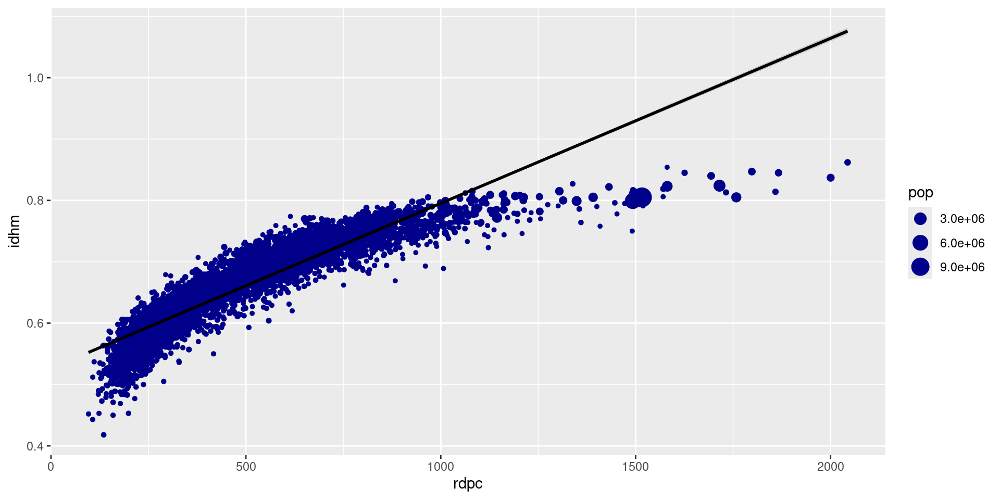A camada Statistics
Podemos fazer a mesma análise por região do Brasil
A camada Statistics
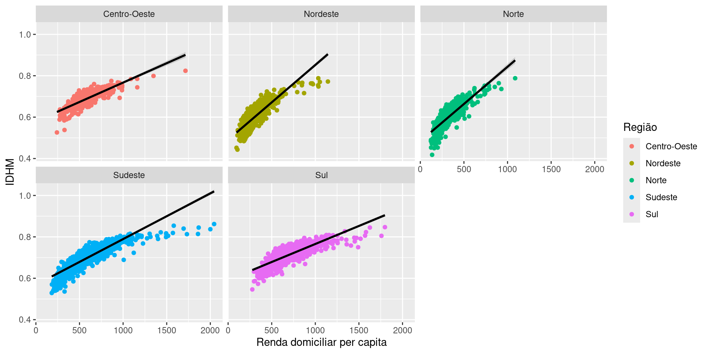A camada Themes
A camada Themes altera a forma de apresentação dos gráficos.

Existem 3 elementos básicos da camada Themes: texto, linhas e retângulos. Juntos, este elementos controlam qualquer elemento visual de um gráfico.
A camada Themes
Para modificar o tipo do tema, vamos considerar o histograma abaixo
A camada Themes
Para modificar o tipo do tema, vamos considerar o histograma abaixo
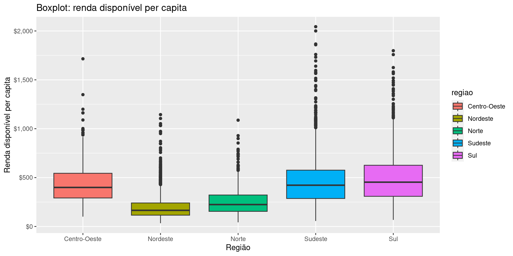A camada Themes
Para reordenar as categorias e remover a legenda, fazemos:
pnud_mun |>
ggplot() +
geom_boxplot(aes(x = regiao, y = rdpc, fill = regiao),
show.legend = FALSE) +
scale_y_continuous(labels = scales::dollar) +
scale_x_discrete(
limits = c("Nordeste", "Norte", "Centro-Oeste",
"Sudeste", "Sul")) +
labs(x = "Região", y = "Renda disponível per capita",
title = "Boxplot: renda disponível per capita") A camada Themes
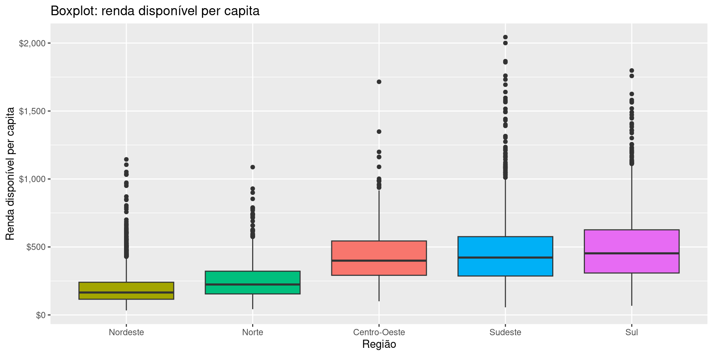A camada Themes
Para escolher as cores das categorias manualmente, fazemos:
pnud_mun |>
ggplot() +
geom_boxplot(aes(x = regiao, y = rdpc, fill = regiao),
show.legend = FALSE) +
scale_y_continuous(labels = scales::dollar) +
scale_x_discrete(
limits = c("Nordeste", "Norte", "Centro-Oeste",
"Sudeste", "Sul")) +
scale_fill_manual(values = c("#fc8d62", "#8da0cb",
"#e78ac3", "#a6d854",
"#666666")) +
labs(x = "Região", y = "Renda disponível per capita",
title = "Boxplot: renda disponível per capita") A camada Themes
Para escolher as cores das categorias manualmente, fazemos:
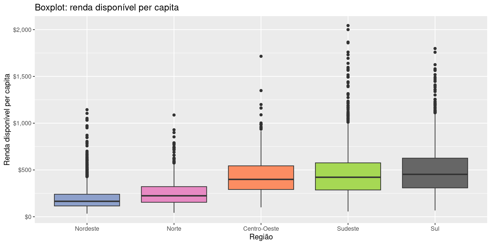A camada Themes
Existem alguns temas já prontos disponíveis no ggplot2 (ver opções diversas neste link. Para alguns exemplos:
pnud_mun |>
ggplot() +
geom_boxplot(aes(x = regiao, y = rdpc, fill = regiao),
show.legend = FALSE) +
scale_y_continuous(labels = scales::dollar) +
scale_x_discrete(
limits = c("Nordeste", "Norte", "Centro-Oeste",
"Sudeste", "Sul")) +
scale_fill_manual(values = c("#fc8d62", "#8da0cb",
"#e78ac3", "#a6d854",
"#666666")) +
labs(x = "Região", y = "Renda disponível per capita",
title = "Boxplot: renda disponível per capita") +
theme_bw()A camada Themes
Built-in Themes
Existem alguns temas já prontos disponíveis no ggplot2 (ver opções diversas neste link. Para alguns exemplos:
pnud_mun |>
ggplot() +
geom_boxplot(aes(x = regiao, y = rdpc, fill = regiao),
show.legend = FALSE) +
scale_y_continuous(labels = scales::dollar) +
scale_x_discrete(
limits = c("Nordeste", "Norte", "Centro-Oeste",
"Sudeste", "Sul")) +
scale_fill_manual(values = c("#fc8d62", "#8da0cb",
"#e78ac3", "#a6d854",
"#666666")) +
labs(x = "Região", y = "Renda disponível per capita",
title = "Boxplot: renda disponível per capita") +
theme_minimal()Built-in Themes
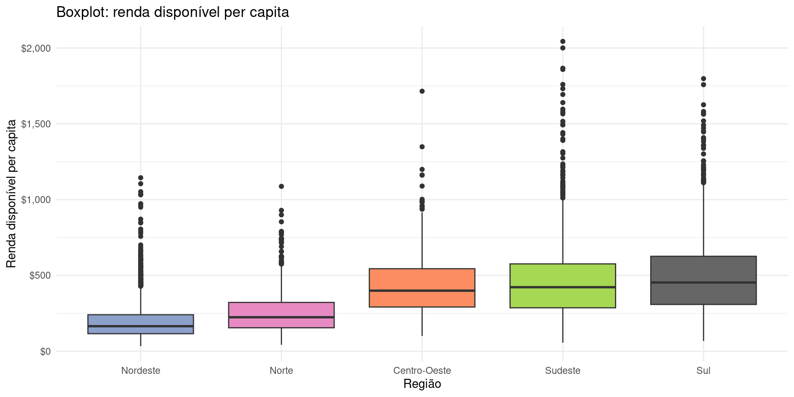Built-in Themes
Ainda, é possível utilizar algumas opções do pacote ggthemes
# Carregar pacote
library(ggthemes)
# Plot
pnud_mun |>
ggplot() +
geom_boxplot(aes(x = regiao, y = rdpc, fill = regiao),
show.legend = FALSE) +
scale_y_continuous(labels = scales::dollar) +
scale_x_discrete(
limits = c("Nordeste", "Norte", "Centro-Oeste",
"Sudeste", "Sul")) +
scale_fill_manual(values = c("#fc8d62", "#8da0cb",
"#e78ac3", "#a6d854",
"#666666")) +
labs(x = "Região", y = "Renda disponível per capita",
title = "Boxplot: renda disponível per capita") +
theme_economist()Built-in Themes
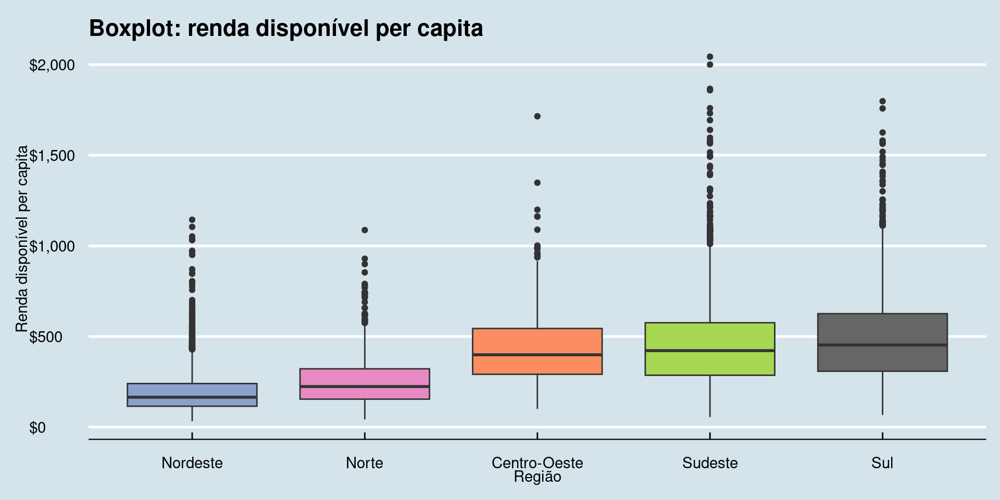Outras referências
Para obter mais material sobre o ggplot2:
- Conceitos básicos: https://r4ds.had.co.nz/data-visualisation.html
- Capítulo R Graphics Cookbook: http://www.cookbook-r.com/Graphs/
- Galeria
ggplot2: https://exts.ggplot2.tidyverse.org/gallery/ - Gráfico dinâmicos com
ggploty: https://plot.ly/ggplot2/extending-ggplotly/
ICDR